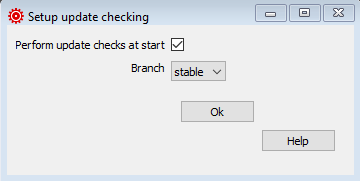
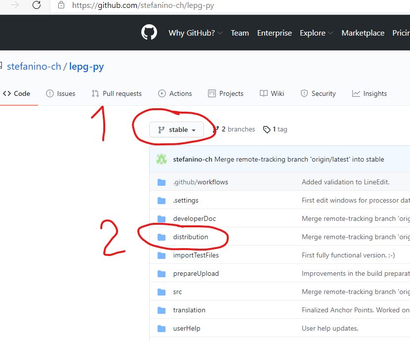

Configure the update checker¶
During startup lepg checks if there is a new version available.

You have the following configuration possibilities:
With the checkbox you can deactivate the check. You will no more be informed if there is a newer version available.
Branch: lepg is available in two versions
stable: the version you should use. Here you shold get a version which all functions available fully implemented.
latest: latest and greatest version. Be careful, here all the development starts, you might get functionality which is not yet fully implemend and buggy.
Download of newer versions¶
New versions you can download from Github.
There you will find both versions.

First select which version you want, stable oder latest.
Afterwards download from the folder “distribution” dthe . zip package.
After the download¶
You can extract the .zip pakage in a folder of your choice.
Afterwards change into the folder “lepg” and execute lepg.exe (double click it).
Don’t forget to configure the location of both processors!